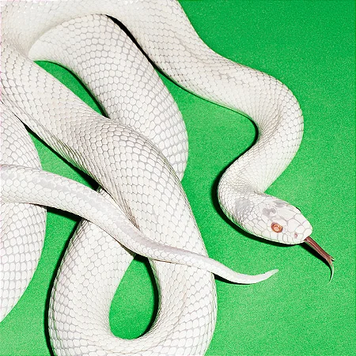

meu primeiro post
por: rebeca marques
Sejam bem vindos ao meu blog,vou compartilhar conhecimentos, curiosidades e etc sobre minhas bandas de rock preferidas.
esse site será sobre bandas de rock no geral, mas irei falar frequentemente sobre a banda alice in chains
por: rebeca marques
Sejam bem vindos ao meu blog,vou compartilhar conhecimentos, curiosidades e etc sobre minhas bandas de rock preferidas.

por: rebeca marques
Gostaria de dizer que o album dirt do alice in chains é um dos melhores em minha opiniao, gosto de toda a profundidade das letras compostas, principalmente porque o layne nao estava passando por uma das melhores fases e mesmo assim conseguiu compor de maneira excepcional!

por: rebeca marques
Mudando um pouco o foco, ultimamente estou viciada no ultimo album lançado pelo deftones, o private music abrange um som mais melancólico, típico da banda.

por: rebeca marques
Esse album faz sucesso com a geração Z, e faz muito sentido, pois ele também tem uma pegada mais melancólica, e foi o primeiro album com a participação de outro baixista, já que o antigo sofreu um acidente de carro.